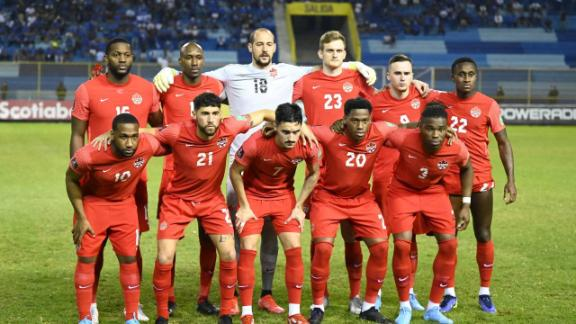

Seleção da Bélgica
Seleção da Bélgica nas Copas do Mundo
A seleção belga participou de sua 13ª edição da Copa do Mundo de futebol em 2018. A melhor
participação dos belgas foi em 2018 com o terceiro lugar na Rússia. Os belgas ficaram em quarto
lugar em 1986. A seleção da Bélgica chegou a participar de seis edições seguidas da Copa do
Mundo (entre 1982 a 2002). Na Eurocopa, o campeonato europeu de seleções, a Bélgica foi vice-
campeã do torneio em 1980 e terceiro lugar em 1972.

Retrospecto da seleção da Bélgica em Copas do Mundo
1930 - Eliminada na 1ª fase
1934 - Eliminada na 1ª fase
1938 - Eliminada na 1ª fase
1950 - Desistiu
1954 - Eliminada na 1ª fase
1958 - Não se classificou
1962 - Não se classificou
1966 - Não se classificou
1970 - Eliminada na 1ª fase
1974 - Não se classificou
1978 - Não se classificou
1982 - Eliminada na 2ª fase
1986 - 4º lugar
1990 - Eliminada nas oitavas-de-final
1994 - Eliminada nas oitavas-de-final
1998 - Eliminada na 1ª fase
2002 - Eliminada nas oitavas-de-final
2006 - Não se classificou
2010 - Não se classificou
2014 - Eliminada nas quartas-de-final
2018 - 3º lugar
Técnico da Seleção da Bélgica
Roberto Martínez
Goleiros
Matz Sels
Simon Mignolet
Thomas Kaminski
Davy Roef
Zagueiros
Jason Denayer
Sebastiaan Bornauw
Arthur Theate
Wout Faes
Dedryck Boyata
Siebe Van Der Heyden
Laterais
Thomas Foket
Volantes
Leander Dendoncker
Orel Mangala
Meias
Youri Tielemans
Albert Sambi Lokonga
Charles De Ketelaere
Hans Vanaken
Yari Verschaeren
Pontas e Centroavantes
Thorgan Hazard
Leandro Trossard
Alexis Saelemaekers
Adnan Januzaj
Divock Origi
Michy Batshuayi
Christian Benteke
Dante Vanzeir